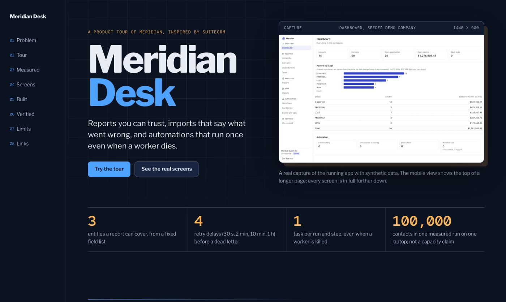

CRM · Reports, workflows, scale · 2026-10
Meridian: reports, imports and automations that run once
Reports you can trust, imports that say what went wrong, and automations that run once even when a worker dies.

The CRM itself is private and not hosted: the public repo and the showcase site contain only the showcase source. Every screenshot is a real capture of the running app with synthetic data; the in-page tour is a labeled illustration of the app's own rules, not a live backend. Original implementation inspired by SuiteCRM; no affiliation.
01 — The problem
An operations team needs reports managers can rely on, bulk imports that explain every rejected row, and business automations (a big deal closes, an onboarding task appears and the owners are told) that happen exactly once, can be inspected afterwards and survive a worker crash, over a dataset that is large.
Defining workflow: Import a mixed-validity CSV and read the row errors, run a grouped report, win a qualifying opportunity and watch the workflow run, kill the worker mid-run and see the run finish with one task, win a smaller opportunity and read why nothing ran.
02 — What I built
One of eleven independent CRM MVPs in a single monorepo, each with its own database, migrations, tests and review packet. This one is inspired by SuiteCRM and is called Meridian.
- An allowlisted report builder aggregated in PostgreSQL (field names map to SQL written in a catalogue, values are bound parameters), with saved versions, a statement timeout, a group limit and CSV export that neutralises spreadsheet formulas
- Access-aware report caching: results are cached per access scope and workspace data version, so an owner's numbers are never served to a member and any write retires every cached result
- A bounded CSV import: preview, column mapping, validation of every row, a duplicate policy, per-row errors and background processing that resumes from a committed cursor
- Versioned trigger-condition-action workflows over a transactional outbox written by a database trigger in the same transaction as the change; a run keeps the version it started with
- A durable worker with leases, retries with backoff, dead letters with owner retry and cancel, idempotent effects in the database, bounded depth, steps and fan-out, and a documented e-mail crash window
- Keyset pagination and a measured load profile: 100,000 contacts, 20 concurrent clients, query plans and honest caveats
03 — How it was built
- 01
Specify before building
An acceptance document names the persona, the bounded scope, what is deferred, and ties every required feature to evidence (a test, an end-to-end journey or a recorded check).
- 02
Model the database so the rules hold even if the code is wrong
A Prisma schema plus a hand-written migration of CHECK constraints, composite foreign keys that pin every record to its workspace, and triggers. The tests try to break these from raw SQL.
- 03
Build the distinguishing workflow through every layer
An allowlisted report builder aggregated in PostgreSQL (field names map to SQL written in a catalogue, values are bound parameters), with saved versions, a statement timeout, a group limit and CSV export that neutralises spreadsheet formulas
- 04
Prove it in a fresh clone
21 gate checks pass and 0 fail in a fresh clone of commit 0c920163e6: 7 unit, 49 integration against a real PostgreSQL, 18 browser tests on the production build, container start, a live black-box check, restart persistence, backup and restore, and a production-dependency audit.
- 05
Review it as an independent reader would
A review packet lists what is implemented, what is measured, what was fixed on the way, and every known limit and release blocker, so nothing here is claimed beyond its evidence.
04 — Results
21 gate checks pass and 0 fail in a fresh clone of commit 0c920163e6: 7 unit, 49 integration against a real PostgreSQL, 18 browser tests on the production build, container start, a live black-box check, restart persistence, backup and restore, and a production-dependency audit.
Measured scale. 100,000 contacts, 20 concurrent clients: worst list p95 78 ms (target 500 ms), worst report p95 193 ms (target 3 s), 19,704 requests in 30 s with 0 errors; one laptop, one workspace, warm cache
Screenshots on the showcase site are real captures at 1440, 768 and 390 pixels wide, taken from the production build with synthetic data.
05 — What I'd do next
- Measured on one laptop with one workspace and a warm cache: this is evidence that the queries are indexed, not a capacity claim
- Reports cover three entities and a fixed set of fields; import is contacts only, up to 5,000 rows; workflows react to opportunity created, won and lost only
- E-mail is plain text and delivery is at-least-once: a crash after the mail server accepted a message and before it was recorded sends it again with the same Message-ID
- No retention job for old events and jobs; UI labels are English only; not production-ready: no TLS, proxy, monitoring or real e-mail provider provisioned